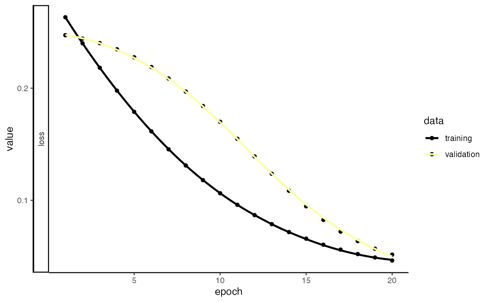
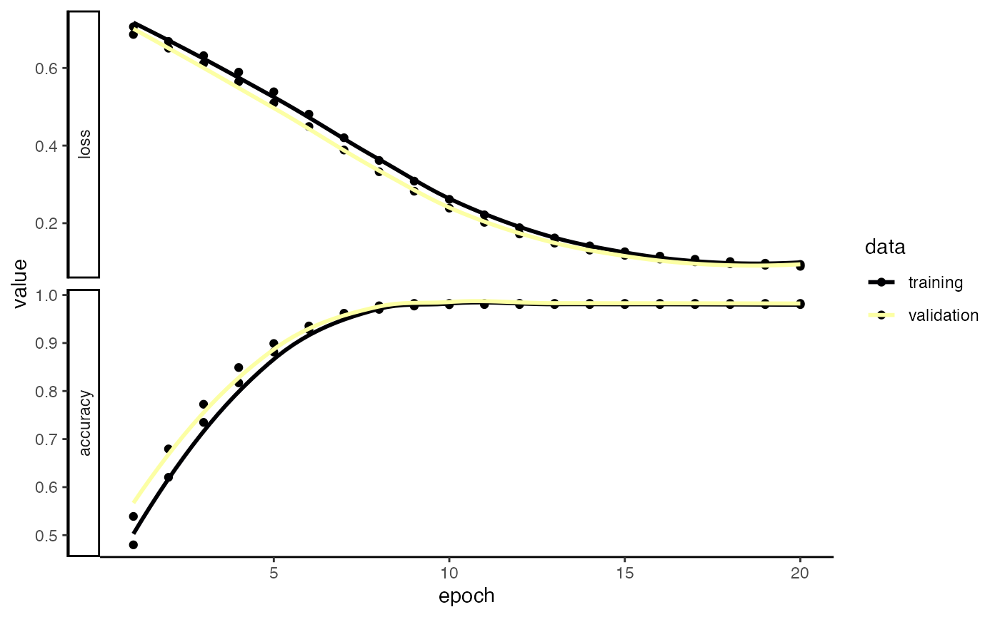

vignettes/articles/immApex.Rmd
immApex.RmdimmApex is meant to serve as an API for deep-learning models based on immune receptor sequencing. These functions extract or generate amino acid or nucleotide sequences and prepare them for deep learning tasks through Keras. immApex is the underlying structure for the BCR models in Ibex and TCR models in Trex. It should be noted, although the tools here are created for immune receptor sequences, they will work more generally for nucleotide or amino acid sequences.
More information is available at the immApex GitHub Repo.
Generating synthetic sequences is a quick way to start testing the
model code. generateSequences() can also generate realistic
noise for generative adversarial networks.
Parameters for generateSequences()
sequences <- generateSequences(prefix.motif = "CAS",
suffix.motif = "YF",
number.of.sequences = 1000,
min.length = 8,
max.length = 16)
head(sequences)## [1] "CASFKRRPLNFYF" "CASDGLNSMSFTKYF" "CASVVDNYVKHHFKYF" "CASMEHTRMYDRTYF"
## [5] "CASPFWKERYRYF" "CASMRIGYMRAGYF"If we want to generate nucleotide sequences instead of amino acids, we just need to change the sequence.dictionary.
nucleotide.sequences <- generateSequences(number.of.sequences = 1000,
min.length = 8,
max.length = 16,
sequence.dictionary = c("A", "C", "T", "G"))
head(nucleotide.sequences)## [1] "ACCGTTCGCCCGGCCC" "GATGGTACTGTATCC" "CGACCGTGTGA" "CTCACGGCTGGATAAT"
## [5] "TCCTTTAGGTG" "CGAGTTGACGCTCG"In addition to making random sequences with
generateSequences(), we can also use generative deep
learning to simulate similar, de novo sequences with
variationalSequences(). variationalSequences()
uses a variational autoencoder that allows for sampling and generation
of sequences similar to the input sequences.
It should be noted that the success of this approach is highly
dependent on the number of sequences used as input and the
hyperparameters of the model. As such,
variationalSequences() has a number of arguments to modify
to allow for optimization.
Parameters for `variationalSequences()
propertyEncoder()
variational.sequences <- variationalSequences(sequences, encoder = "onehotEncoder", number.of.sequences = 100,
encoder.hidden.dim = c(256, 128), latent.dim = 16, batch.size = 16, call.threshold = 0.1)## [1] "Converting to matrix...."
## [1] "Padding sequences..."
## [1] "One Hot Encoding sequences..."
## [1] "Preparing a matrix..."
## [1] "Fitting Model...."
## [1] "Generating New Sequences...."
## 4/4 - 0s - 36ms/epoch - 9ms/step
head(variational.sequences)## [1] "CASNSHSGHRRQYF" "CASCMMWQEEWYF" "CASNRLTTKNRQYF" "CASEDAKGDQ.MQYF"
## [5] "CASAKVKGPVFM.YF" "CASEKGDMPVGYF..F"A common approach is to mutate sequences randomly or at specific intervals. This can be particularly helpful if we have fewer sequences or want to test a model for accuracy given new, altered sequences. mutateSequences() allows us to tune the type of mutation, where along the sequences to introduce the mutation and the overall number of mutations.
Parameters for mutateSequences()
mutated.sequences <- mutateSequences(sequences,
n.sequence = 1,
position.start = 3,
position.end = 8)
head(sequences)## [1] "CASFKRRPLNFYF" "CASDGLNSMSFTKYF" "CASVVDNYVKHHFKYF" "CASMEHTRMYDRTYF"
## [5] "CASPFWKERYRYF" "CASMRIGYMRAGYF"
head(mutated.sequences)## [1] "CAKFKRRPLNFYF" "CASDGLQSMSFTKYF" "CASVVANYVKHHFKYF" "CASMEHTKMYDRTYF"
## [5] "CASPPWKERYRYF" "CASMRIAYMRAGYF"Immune receptor nomenclature can be highly variable across sequencing
platforms. When preparing data for models, we can use
`formatGenes() to universalize the gene formats into IMGT
nomenclature.
Parameters for formatGenes()
Here, we will use the built-in example from Adaptive Biotechnologies
and reformat and simplify the v region.
formatGenes() will add 2 columns to the end of the data
frame per region selected - 1) v_IMGT will be the
formatted gene calls and 2) v_IMGT.check is a binary
for if the formatted region appears in the IMGT database. In the example
below, “TRBV2-1” is not recognized as a designation within IMGT.
Adaptive_example <- formatGenes(immapex_example.data[["Adaptive"]],
region = "v",
technology = "Adaptive",
simplify.format = TRUE)
head(Adaptive_example[,c("aminoAcid","vGeneName", "v_IMGT", "v_IMGT.check")])## aminoAcid vGeneName v_IMGT v_IMGT.check
## 1 CASSAGEYGYEQYF TCRBV12-03 TRBV12-3 1
## 2 CASRNPGLASTGSYGQYF TCRBV06-02 TRBV6-2 1
## 3 CATSDLGDVGGETQYF TCRBV24-01 TRBV24-1 1
## 5 CASSPSAGRINTIYF TCRBV06-05 TRBV6-5 1
## 6 CASRDGGATGELFF TCRBV06-02 TRBV6-2 1
## 7 CASPSPSGRRETQYF TCRBV02-01 TRBV2-1 0Depending on the sequencing technology and the version, we might want
to expand the length of our sequence embedding approach. The first step
in the process is pulling the reference sequences from the
ImMunoGeneTics (IMGT) system using getIMGT(). More
information for IMGT can be found at imgt.org.
Parameters for getIMGT()
Here, we will use the getIMGT() function to get the
amino acid sequences for the TRBV region to get all the sequences by V
gene allele.
TRBV_aa <- getIMGT(species = "human",
chain = "TRB",
frame = "inframe",
region = "v",
sequence.type = "aa") ## [1] "Getting the sequences from IMGT..."
## [1] "Formatting IMGT sequences..."
TRBV_aa[[1]][1]## $`TRBV1*01`
## [1] "HPVREGIONAADTGITQTPKYLVTAMGSKRTMKREHLGHDSMYWYRQKAKKSLEFMFYYNCKEFIENKTVPNHFTPECPDSSRLYLHVVALQQEDSAAYLCTSSQ"We can now use inferCDR() to add additional sequence
elements to our example data using the outputs of
formatGenes() and getIMGT(). Here, we will use
the function to isolate the complementarity-determining regions (CDR) 1
and 2. If the gene nomenclature does not match the IMGT the result will
be NA for the given sequences. Likewise, if the IMGT nomenclature has
been simplified, the first allelic match will be used for sequence
extraction.
Parameters for inferCDR
getIMGT()
Adaptive_example <- inferCDR(Adaptive_example,
chain = "TRB",
reference = TRBV_aa,
technology = "Adaptive",
sequence.type = "aa",
sequences = c("CDR1", "CDR2"))
Adaptive_example[200:210,c("CDR1_IMGT", "CDR2_IMGT")]## CDR1_IMGT CDR2_IMGT
## 200 GRQVTLMCHQTW LIYYSAAADI
## 201 GRQVTLMCHQTW LIYYSAAADI
## 202 GRQVTLMCHQTW LIYYSAAADI
## 203 GRQVTLMCHQTW LIYYSAAADI
## 204 GRQVTLMCHQTW LIYYSAAADI
## 205 GRQVTLMCHQTW LIYYSAAADI
## 206 GRQVTLMCHQTW LIYYSAAADI
## 207 GRQVTLMCHQTW LIYYSAAADI
## 208 GRQVTLMCHQTW LIYYSAAADI
## 209 GRQVTLMCHQTW LIYYSAAADI
## 210 GRQVTLMCHQTW LIYYSAAADIOne hot encoding of amino acid or nucleotide sequences is a common method for transforming sequences into numeric matrices compatible with Keras (or other workflows).
Parameters for onehotEncoder()
sequence.matrix <- onehotEncoder(input.sequences = c(sequences, mutated.sequences),
convert.to.matrix = TRUE)## [1] "Padding sequences..."
## [1] "One Hot Encoding sequences..."
## [1] "Preparing a matrix..."
head(sequence.matrix[,1:20])## Pos.1_A Pos.1_R Pos.1_N Pos.1_D Pos.1_C Pos.1_Q Pos.1_E Pos.1_G Pos.1_H
## [1,] 0 0 0 0 1 0 0 0 0
## [2,] 0 0 0 0 1 0 0 0 0
## [3,] 0 0 0 0 1 0 0 0 0
## [4,] 0 0 0 0 1 0 0 0 0
## [5,] 0 0 0 0 1 0 0 0 0
## [6,] 0 0 0 0 1 0 0 0 0
## Pos.1_I Pos.1_L Pos.1_K Pos.1_M Pos.1_F Pos.1_P Pos.1_S Pos.1_T Pos.1_W
## [1,] 0 0 0 0 0 0 0 0 0
## [2,] 0 0 0 0 0 0 0 0 0
## [3,] 0 0 0 0 0 0 0 0 0
## [4,] 0 0 0 0 0 0 0 0 0
## [5,] 0 0 0 0 0 0 0 0 0
## [6,] 0 0 0 0 0 0 0 0 0
## Pos.1_Y Pos.1_V
## [1,] 0 0
## [2,] 0 0
## [3,] 0 0
## [4,] 0 0
## [5,] 0 0
## [6,] 0 0An alternative to one hot encoding is transforming the sequences into an array/matrix of numerical values using amino acid properties.
These properties are largely based on dimensional reduction strategies, but it is essential to know the assumptions for each approach (links to original work below). Important to note: this encoding strategy is specific for amino acids.
method.to.use
property.matrix <- propertyEncoder(input.sequences = c(sequences, mutated.sequences),
method.to.use = "FASGAI",
convert.to.matrix = TRUE)## [1] "Padding sequences..."
## [1] "Property-based Encoding sequences..."
## [1] "Preparing a matrix..."
head(property.matrix[,1:20])## Pos.1_F1 Pos.1_F2 Pos.1_F3 Pos.1_F4 Pos.1_F5 Pos.1_F6 Pos.2_F1
## [1,] 0.8189626 0.6210147 0.06362416 0 0.063684 0.5042316 0.5475782
## [2,] 0.8189626 0.6210147 0.06362416 0 0.063684 0.5042316 0.5475782
## [3,] 0.8189626 0.6210147 0.06362416 0 0.063684 0.5042316 0.5475782
## [4,] 0.8189626 0.6210147 0.06362416 0 0.063684 0.5042316 0.5475782
## [5,] 0.8189626 0.6210147 0.06362416 0 0.063684 0.5042316 0.5475782
## [6,] 0.8189626 0.6210147 0.06362416 0 0.063684 0.5042316 0.5475782
## Pos.2_F2 Pos.2_F3 Pos.2_F4 Pos.2_F5 Pos.2_F6 Pos.3_F1 Pos.3_F2
## [1,] 0.8428057 0.1736913 0.8702309 0.2374043 0.2587973 0.3064239 0.3803715
## [2,] 0.8428057 0.1736913 0.8702309 0.2374043 0.2587973 0.3064239 0.3803715
## [3,] 0.8428057 0.1736913 0.8702309 0.2374043 0.2587973 0.3064239 0.3803715
## [4,] 0.8428057 0.1736913 0.8702309 0.2374043 0.2587973 0.3064239 0.3803715
## [5,] 0.8428057 0.1736913 0.8702309 0.2374043 0.2587973 0.3064239 0.3803715
## [6,] 0.8428057 0.1736913 0.8702309 0.2374043 0.2587973 0.3064239 0.3803715
## Pos.3_F3 Pos.3_F4 Pos.3_F5 Pos.3_F6 Pos.4_F1 Pos.4_F2
## [1,] 0.1548993 0.6681727 0.2317614 0.3772829 0.90484370 0.69642362
## [2,] 0.1548993 0.6681727 0.2317614 0.3772829 0.03057369 0.49209870
## [3,] 0.1548993 0.6681727 0.2317614 0.3772829 0.01889385 0.76628777
## [4,] 0.1548993 0.6681727 0.2317614 0.3772829 0.78083133 0.98835597
## [5,] 0.1548993 0.6681727 0.2317614 0.3772829 0.33665407 0.05018021
## [6,] 0.1548993 0.6681727 0.2317614 0.3772829 0.78083133 0.98835597propertyEncoder() also allows us to use multiple
approaches simultaneously by setting method.to.use as a
vector.
mulit.property.matrix <- propertyEncoder(input.sequences = c(sequences, mutated.sequences),
method.to.use = c("atchleyFactors", "kideraFactors"),
convert.to.matrix = TRUE)## [1] "Padding sequences..."
## [1] "Property-based Encoding sequences..."
## [1] "Preparing a matrix..."
head(mulit.property.matrix[,1:20])## Pos.1_AF1 Pos.1_AF2 Pos.1_AF3 Pos.1_AF4 Pos.1_AF5 Pos.1_KF1 Pos.1_KF2
## [1,] 0 0.551818 0.4960678 0.2994783 0.4864792 0.4640884 0.2635468
## [2,] 0 0.551818 0.4960678 0.2994783 0.4864792 0.4640884 0.2635468
## [3,] 0 0.551818 0.4960678 0.2994783 0.4864792 0.4640884 0.2635468
## [4,] 0 0.551818 0.4960678 0.2994783 0.4864792 0.4640884 0.2635468
## [5,] 0 0.551818 0.4960678 0.2994783 0.4864792 0.4640884 0.2635468
## [6,] 0 0.551818 0.4960678 0.2994783 0.4864792 0.4640884 0.2635468
## Pos.1_KF3 Pos.1_KF4 Pos.1_KF5 Pos.1_KF6 Pos.1_KF7 Pos.1_KF8 Pos.1_KF9
## [1,] 0.5643836 0.1511628 0.2675676 1 1 0.3454936 0.8553616
## [2,] 0.5643836 0.1511628 0.2675676 1 1 0.3454936 0.8553616
## [3,] 0.5643836 0.1511628 0.2675676 1 1 0.3454936 0.8553616
## [4,] 0.5643836 0.1511628 0.2675676 1 1 0.3454936 0.8553616
## [5,] 0.5643836 0.1511628 0.2675676 1 1 0.3454936 0.8553616
## [6,] 0.5643836 0.1511628 0.2675676 1 1 0.3454936 0.8553616
## Pos.1_KF10 Pos.2_AF1 Pos.2_AF2 Pos.2_AF3 Pos.2_AF4 Pos.2_AF5
## [1,] 0.8661616 0.2366665 0.06143816 0.5124824 1 0.5043415
## [2,] 0.8661616 0.2366665 0.06143816 0.5124824 1 0.5043415
## [3,] 0.8661616 0.2366665 0.06143816 0.5124824 1 0.5043415
## [4,] 0.8661616 0.2366665 0.06143816 0.5124824 1 0.5043415
## [5,] 0.8661616 0.2366665 0.06143816 0.5124824 1 0.5043415
## [6,] 0.8661616 0.2366665 0.06143816 0.5124824 1 0.5043415If, instead, we would like to get the set of summarized values across all amino acid residues for a given method.to.use, we can use summary.function and select “median”, “mean”, “sum”, variance (“vars”), or Median Absolute Deviation (“mads”).
median.property.matrix <- propertyEncoder(input.sequences = c(sequences, mutated.sequences),
method.to.use = "crucianiProperties",
summary.function = "median")## [1] "Padding sequences..."
## [1] "Property-based Encoding sequences..."
## [1] "Summarising properties using median..."
head(median.property.matrix[,1:3])## PP1 PP2 PP3
## [1,] 0.0850 0.4075 0.4325
## [2,] 0.4400 0.1975 0.5525
## [3,] 0.6550 0.3650 0.4700
## [4,] 0.6775 0.3550 0.5275
## [5,] 0.3775 0.4250 0.4000
## [6,] 0.0825 0.3700 0.5275One approach to encode amino acid sequences is geometric isometry, such as GIANA.
Parameters for geometricEncoder()
geometric.matrix <- geometricEncoder(sequences,
method.to.use = "BLOSUM62",
theta = pi/3)## [1] "Performing geometric transformation..."
head(geometric.matrix)## [,1] [,2] [,3] [,4] [,5] [,6] [,7]
## [1,] -0.9175541 0.35848108 -2.270512 -0.06735726 -1.548027 0.5274159 -2.529437
## [2,] -1.4124356 -0.35358984 -1.248162 -0.10478645 -1.366025 0.3660254 -1.639230
## [3,] -1.5970349 0.01614564 -1.682412 0.03902223 -1.522275 0.6366583 -2.317427
## [4,] -0.7952135 0.31068360 -1.530299 0.11722202 -1.004145 0.8058972 -2.156453
## [5,] -0.9560156 0.42509842 -2.434664 0.37080831 -1.358481 0.8144967 -2.298668
## [6,] -0.8137361 -0.30485351 -2.631913 0.13003629 -1.392170 0.2684522 -1.723168
## [,8] [,9] [,10] [,11] [,12] [,13]
## [1,] 0.2272679 -1.6606506 0.1071004 -1.099556 0.5198716 -0.4127712
## [2,] 0.4392305 -1.7547005 0.3725638 -1.374957 0.5148288 -0.8196152
## [3,] -0.1110980 -0.7806488 -0.5228766 -1.328646 0.6762818 -0.6768829
## [4,] -0.3982480 -1.3457689 -0.4690599 -1.292820 0.6392305 -0.8350853
## [5,] -0.1724361 -1.9449700 -0.3235209 -1.302169 1.0246545 -0.6998520
## [6,] 0.9846150 -1.4993129 0.4540290 -1.515888 0.1970236 -0.6020145
## [,14] [,15] [,16] [,17] [,18] [,19]
## [1,] 0.56109451 -1.4175541 1.224506 -1.965581 0.01987156 -1.3426525
## [2,] 0.21961524 -0.7113249 1.898717 -1.783247 -0.64465820 -1.4636322
## [3,] 0.54739564 -1.6578925 1.496554 -2.038421 -0.09435118 -0.4078925
## [4,] -0.02025651 -1.2553418 1.507649 -1.518974 -0.56905989 -1.1058972
## [5,] 0.75064079 -1.5123272 1.080966 -1.043244 0.73002931 -1.2732738
## [6,] -0.10013741 -1.5401556 1.667628 -1.834752 0.17788436 -0.9470236
## [,20]
## [1,] -0.597534553
## [2,] 0.001751963
## [3,] -0.668509526
## [4,] -0.484529946
## [5,] -1.179240540
## [6,] -0.216849885Another approach to transforming a sequence into numerical values is tokenizing it into numbers. This is a common approach for recurrent neural networks where one letter corresponds to a single integer. In addition, we can add a start and stop tokens to our original sequences to differentiate between the beginning and end of the sequences.
Parameters for tokenizeSequences()
token.matrix <- tokenizeSequences(input.sequences = c(sequences, mutated.sequences),
add.startstop = TRUE,
start.token = "!",
stop.token = "^",
convert.to.matrix = TRUE)## [1] "Adding start and stop tokens..."
## [1] "Tokenizing sequences..."
## [1] "Padding sequences..."
## [1] "Preparing a tokenized matrix..."
head(token.matrix[,1:18])## [,1] [,2] [,3] [,4] [,5] [,6] [,7] [,8] [,9] [,10] [,11] [,12]
## CASFKRRPLNFYF 1 6 2 17 15 13 3 3 16 12 4 15
## CASDGLNSMSFTKYF 1 6 2 17 5 9 12 4 17 14 17 15
## CASVVDNYVKHHFKYF 1 6 2 17 21 21 5 4 20 21 13 10
## CASMEHTRMYDRTYF 1 6 2 17 14 8 10 18 3 14 20 5
## CASPFWKERYRYF 1 6 2 17 16 15 19 13 8 3 20 3
## CASMRIGYMRAGYF 1 6 2 17 14 3 11 9 20 14 3 2
## [,13] [,14] [,15] [,16] [,17] [,18]
## CASFKRRPLNFYF 20 15 23 24 24 24
## CASDGLNSMSFTKYF 18 13 20 15 23 24
## CASVVDNYVKHHFKYF 10 15 13 20 15 23
## CASMEHTRMYDRTYF 3 18 20 15 23 24
## CASPFWKERYRYF 20 15 23 24 24 24
## CASMRIGYMRAGYF 9 20 15 23 24 24Another method for encoding a group of sequences is to calculate the
positional probability of sequences using
probabilityMatrixs(). This function could represent a
collection of antigen-specific sequences or even work on embedding a
total repertoire.
ppm.matrix <- probabilityMatrix(sequences)## [1] "Padding sequences..."
## [1] "Calculating Positional Probabilites for sequences..."
head(ppm.matrix)## Pos.1 Pos.2 Pos.3 Pos.4 Pos.5 Pos.6 Pos.7 Pos.8 Pos.9 Pos.10 Pos.11 Pos.12
## A 0 1 0 0.055 0.048 0.044 0.040 0.041 0.042 0.043 0.048 0.029
## R 0 0 0 0.041 0.046 0.062 0.044 0.052 0.054 0.056 0.042 0.042
## N 0 0 0 0.055 0.037 0.042 0.041 0.045 0.036 0.063 0.056 0.027
## D 0 0 0 0.057 0.047 0.042 0.042 0.051 0.051 0.048 0.047 0.037
## C 1 0 0 0.054 0.050 0.053 0.060 0.054 0.039 0.044 0.048 0.037
## Q 0 0 0 0.052 0.040 0.057 0.056 0.063 0.055 0.050 0.057 0.037
## Pos.13 Pos.14 Pos.15 Pos.16
## A 0.020 0.011 0 0
## R 0.027 0.009 0 0
## N 0.020 0.016 0 0
## D 0.027 0.009 0 0
## C 0.026 0.013 0 0
## Q 0.028 0.011 0 0In addition, probabilityMatrix() can convert the
positional probability matrix into a positional weight matrix using
log-likelihood using the argument convert.PWM = TRUE.
We can provide a set of background frequencies for the amino acids with
background.frequencies or leave this blank to assume a
uniform distribution for all amino acids. Here, we are going to use an
example background.
set.seed(42)
back.freq <- sample(1:1000, 20)
back.freq <- back.freq/sum(back.freq)
pwm.matrix <- probabilityMatrix(sequences,
max.length = 20,
convert.PWM = TRUE,
background.frequencies = back.freq)## [1] "Padding sequences..."
## [1] "Calculating Positional Probabilites for sequences..."
## [1] "Converting to Liklihoods for a PWM..."
head(pwm.matrix)## Pos.1 Pos.2 Pos.3 Pos.4 Pos.5 Pos.6 Pos.7
## A -6.157338 3.809888 -6.157338 -0.3499835 -0.5426286 -0.66548534 -0.79978643
## R -6.986931 -6.986931 -6.986931 -1.5946137 -1.4323423 -1.00965124 -1.49507807
## N -5.351911 -5.351911 -5.351911 0.4554440 -0.1039834 0.07435379 0.04040646
## D -4.282869 -4.282869 -4.282869 1.5751117 1.3020932 1.14339544 1.14339544
## C 6.732291 -3.234935 -3.234935 2.5464249 2.4374905 2.51995266 2.69580250
## Q -4.858371 -4.858371 -4.858371 0.8695490 0.4991805 0.99960951 0.97451853
## Pos.8 Pos.9 Pos.10 Pos.11 Pos.12 Pos.13 Pos.14
## A -0.765021 -0.7310737 -0.6979068 -0.5426286 -1.2504478 -1.765021012 -2.5723759
## R -1.259011 -1.2055715 -1.1540412 -1.5606664 -1.5606664 -2.179576246 -3.6650031
## N 0.171651 -0.1424576 0.6480890 0.4809791 -0.5445560 -0.959593538 -1.2644481
## D 1.417570 1.4175704 1.3318405 1.3020932 0.9650582 0.524485605 -0.9609412
## C 2.546425 2.0869933 2.2569183 2.3797750 2.0129927 1.519952663 0.5724201
## Q 1.141629 0.9489834 0.8140539 0.9996095 0.3895560 -0.000390493 -1.2734090
## Pos.15 Pos.16 Pos.17 Pos.18 Pos.19 Pos.20
## A -6.157338 -6.157338 -6.157338 -6.157338 -6.157338 -6.157338
## R -6.986931 -6.986931 -6.986931 -6.986931 -6.986931 -6.986931
## N -5.351911 -5.351911 -5.351911 -5.351911 -5.351911 -5.351911
## D -4.282869 -4.282869 -4.282869 -4.282869 -4.282869 -4.282869
## C -3.234935 -3.234935 -3.234935 -3.234935 -3.234935 -3.234935
## Q -4.858371 -4.858371 -4.858371 -4.858371 -4.858371 -4.858371Similar to the positional probability, we can also summarize a given
set of sequences by the frequency of adjacency for a given set of amino
acid or nucleotide residues using adjacencyMatrix(). For
this function, a matrix of n x n (defined by the length of
sequence.dictionary) is created and the number of times
a residue is adjacent to one another is calculated. We can
normalize the values using the total number of residues
evaluated.
adj.matrix <- adjacencyMatrix(sequences,
normalize = FALSE)
adj.matrix## A R N D C Q E G H I L K M F P S T W Y V
## A 32 39 35 24 1029 49 38 36 31 40 43 40 36 35 31 1090 40 40 89 45
## R 39 36 39 38 54 46 42 58 41 35 64 52 39 36 41 89 45 39 80 37
## N 35 39 54 42 37 29 33 27 35 31 48 40 38 52 44 95 32 36 83 46
## D 24 38 42 42 47 38 37 48 44 47 44 42 36 42 40 97 36 50 81 41
## C 1029 54 37 47 38 58 43 45 38 45 25 38 47 56 42 88 41 48 101 36
## Q 49 46 29 38 58 40 42 48 46 30 49 47 48 45 45 88 51 47 119 47
## E 38 42 33 37 43 42 46 40 43 47 46 52 49 37 49 109 46 41 85 35
## G 36 58 27 48 45 48 40 42 48 38 43 52 46 44 37 79 54 36 117 56
## H 31 41 35 44 38 46 43 48 34 45 43 43 31 48 51 83 56 35 81 36
## I 40 35 31 47 45 30 47 38 45 38 36 50 55 44 50 99 52 41 97 30
## L 43 64 48 44 25 49 46 43 43 36 60 32 46 41 60 115 38 37 96 52
## K 40 52 40 42 38 47 52 52 43 50 32 40 36 53 44 86 42 37 88 44
## M 36 39 38 36 47 48 49 46 31 55 46 36 36 36 39 89 39 35 87 44
## F 35 36 52 42 56 45 37 44 48 44 41 53 36 36 41 101 41 39 1079 42
## P 31 41 44 40 42 45 49 37 51 50 60 44 39 41 36 109 48 44 94 45
## S 1090 89 95 97 88 88 109 79 83 99 115 86 89 101 109 122 96 105 135 69
## T 40 45 32 36 41 51 46 54 56 52 38 42 39 41 48 96 54 45 107 39
## W 40 39 36 50 48 47 41 36 35 41 37 37 35 39 44 105 45 48 88 53
## Y 89 80 83 81 101 119 85 117 81 97 96 88 87 1079 94 135 107 88 128 85
## V 45 37 46 41 36 47 35 56 36 30 52 44 44 42 45 69 39 53 85 56We have a function called sequenceDecoder() that
extracts sequences from one-hot or property-encoded matrices or arrays.
This function can be applied to any generative approach to sequence
generation.
Parameters for sequenceDecoder()
propertyEncoder(). This will be ignored if
encoder = “onehotEncoder”
property.matrix <- propertyEncoder(input.sequences = c(sequences, mutated.sequences), method.to.use = "FASGAI",
convert.to.matrix = TRUE)## [1] "Padding sequences..."
## [1] "Property-based Encoding sequences..."
## [1] "Preparing a matrix..."
property.sequences <- sequenceDecoder(property.matrix, encoder = "propertyEncoder", aa.method.to.use = "FASGAI",
call.threshold = 1)
head(sequences)## [1] "CASFKRRPLNFYF" "CASDGLNSMSFTKYF" "CASVVDNYVKHHFKYF" "CASMEHTRMYDRTYF"
## [5] "CASPFWKERYRYF" "CASMRIGYMRAGYF"
head(property.sequences)## [1] "CASFKRRPLNFYF" "CASDGLNSMSFTKYF" "CASVVDNYVKHHFKYF" "CASMEHTRMYDRTYF"
## [5] "CASPFWKERYRYF" "CASMRIGYMRAGYF"A similar approach can be applied when using matrices or arrays derived from one-hot encoding:
sequence.matrix <- onehotEncoder(input.sequences = c(sequences, mutated.sequences), convert.to.matrix = TRUE)## [1] "Padding sequences..."
## [1] "One Hot Encoding sequences..."
## [1] "Preparing a matrix..."
OHE.sequences <- sequenceDecoder(sequence.matrix, encoder = "onehotEncoder")
head(OHE.sequences)## [1] "CASFKRRPLNFYF" "CASDGLNSMSFTKYF" "CASVVDNYVKHHFKYF" "CASMEHTRMYDRTYF"
## [5] "CASPFWKERYRYF" "CASMRIGYMRAGYF"For the vignette - we will use an autoencoder for sequence embedding.
The code below is based on the Trex R package. The
overall structure of the autoencoder is the same. However, some of the
parameters are modified for the sake of the vignette. We will use the
sequence.matrix we generated above from the
onehotEncoder().
The steps to train the model include:
#Sampling to make Training/Valid Data
set.seed(42)
num_sequences <- nrow(sequence.matrix)
indices <- 1:num_sequences
train_indices <- sample(indices, size = floor(0.8 * num_sequences))
val_indices <- setdiff(indices, train_indices)
x_train <- sequence.matrix[train_indices,]
x_val <- sequence.matrix[val_indices,]
# Parameters
input_shape <- dim(x_train)[2]
epochs <- 20
batch_size <- 128
encoding_dim <- 40
hidden_dim1 <- 256 # Hidden layer 1 size
hidden_dim2 <- 128 # Hidden layer 2 size
es = callback_early_stopping(monitor = "val_loss",
min_delta = 0,
patience = 4,
verbose = 1,
mode = "min")
# Define the Model
input_seq <- layer_input(shape = c(input_shape))
# Encoder Layers
encoded <- input_seq %>%
layer_dense(units = hidden_dim1, name = "e.1") %>%
layer_batch_normalization(name = "bn.1") %>%
layer_activation('leaky_relu', name = "act.1") %>%
layer_dense(units = hidden_dim2, name = "e.2") %>%
layer_batch_normalization(name = "bn.2") %>%
layer_activation('leaky_relu', name = "act.2") %>%
layer_dense(units = encoding_dim, activation = 'selu', name = "latent")
# Decoder Layers
decoded <- encoded %>%
layer_dense(units = hidden_dim2, name = "d.2") %>%
layer_batch_normalization(name = "bn.3") %>%
layer_activation('leaky_relu', name = "act.3") %>%
layer_dense(units = hidden_dim1, name = "d.1") %>%
layer_batch_normalization(name = "bn.4") %>%
layer_activation('leaky_relu', name = "act.4") %>%
layer_dense(units = input_shape, activation = 'sigmoid')
# Autoencoder Model
autoencoder <- keras_model(input_seq, decoded)
autoencoder %>% keras::compile(optimizer = optimizer_adam(learning_rate = 0.0001),
loss = "mse")
# Train the model
history <- autoencoder %>% fit(x = x_train,
y = x_train,
validation_data = list(x_val, x_val),
epochs = epochs,
batch_size = batch_size,
shuffle = TRUE,
callbacks = es,
verbose = 0)
plot(history) +
scale_color_viridis(option = "B", discrete = TRUE) +
scale_fill_manual(values = c("black","black")) +
theme_classic()
We can also build classifiers directly using deep or shallow neural networks. Building deep classifiers requires more data than classical machine learning methods, like random forests, so the vignette may not be ideal.
The first step is to generate distinct types of sequences
using generateSequences() and onehotEncoder() to
prepare the data for the model.
class1.sequences <- generateSequences(prefix.motif = "CAS",
suffix.motif = "YF",
number.of.sequences = 10000,
min.length = 8,
max.length = 16)
class2.sequences <- generateSequences(prefix.motif = "CASF",
suffix.motif = "YF",
number.of.sequences = 10000,
min.length = 8,
max.length = 16)
labels <- as.numeric(c(rep(0, 10000), rep(1, 10000)))
classifier.matrix <- onehotEncoder(input.sequences = c(class1.sequences, class2.sequences),
convert.to.matrix = TRUE)## [1] "Padding sequences..."
## [1] "One Hot Encoding sequences..."
## [1] "Preparing a matrix..."Next, we will define and train the Keras classifier model using artificial sequences. We will use a simple convolutional neural network with 2 layers and then a single neuron that will classify the sequences into class 1 or class 2 (here, the labels are 0 and 1).
#Input shape will be 1D as we are using a matrix
input.shape <- dim(classifier.matrix)[2]
#Simple model structure
classifier.model <- keras_model_sequential() %>%
layer_dense(units = 128, activation = "relu",
input_shape = c(input.shape)) %>%
layer_dense(units = 32, activation = "relu") %>%
layer_dense(units = 1, activation = "sigmoid")
classifier.model %>% compile(
optimizer = optimizer_adam(learning_rate = 0.00001),
loss = "binary_crossentropy",
metrics = c("accuracy")
)
#Seperating data and labels
set.seed(42)
val_indices <- sample(nrow(classifier.matrix), 10000*0.2)
x_val <- classifier.matrix[val_indices,]
x_train <- classifier.matrix[-val_indices,]
val_labels <- labels[val_indices]
train_labels <- labels[-val_indices]
#Training the classifier.model
history <- classifier.model %>% fit(x_train,
train_labels,
epochs = 20,
batch_size = 32,
validation_data = list(x_val, val_labels),
verbose = 0
)
plot(history) +
scale_color_viridis(option = "B", discrete = TRUE) +
scale_fill_manual(values = c("black","black")) +
theme_classic()
Here, we can achieve a validation accuracy of 98.25%, which is
impressive. But to contextualize, we used
generateSequences() and distinct motifs - “CAS” vs “CASF”
to create our 2 classes of sequences. Using sequences from experimental
data will likely result in lower accuracy or require greater model
complexity.
This has been a general overview of the capabilities of immApex for processing immune receptor sequences and making deep learning models. If you have any questions, comments, or suggestions, feel free to visit the GitHub repository.
## R version 4.3.0 (2023-04-21)
## Platform: aarch64-apple-darwin20 (64-bit)
## Running under: macOS 14.0
##
## Matrix products: default
## BLAS: /Library/Frameworks/R.framework/Versions/4.3-arm64/Resources/lib/libRblas.0.dylib
## LAPACK: /Library/Frameworks/R.framework/Versions/4.3-arm64/Resources/lib/libRlapack.dylib; LAPACK version 3.11.0
##
## locale:
## [1] en_US.UTF-8/en_US.UTF-8/en_US.UTF-8/C/en_US.UTF-8/en_US.UTF-8
##
## time zone: America/Chicago
## tzcode source: internal
##
## attached base packages:
## [1] stats graphics grDevices utils datasets methods base
##
## other attached packages:
## [1] dplyr_1.1.4 viridis_0.6.5 viridisLite_0.4.2 ggplot2_3.5.1
## [5] keras_2.15.0 immApex_0.99.0
##
## loaded via a namespace (and not attached):
## [1] tidyselect_1.2.1 farver_2.1.2
## [3] tensorflow_2.16.0 bitops_1.0-8
## [5] fastmap_1.2.0 SingleCellExperiment_1.24.0
## [7] RCurl_1.98-1.16 digest_0.6.36
## [9] lifecycle_1.0.4 magrittr_2.0.3
## [11] compiler_4.3.0 rlang_1.1.4
## [13] sass_0.4.9 tools_4.3.0
## [15] utf8_1.2.4 yaml_2.3.10
## [17] knitr_1.48 labeling_0.4.3
## [19] S4Arrays_1.2.0 htmlwidgets_1.6.4
## [21] curl_5.2.1 reticulate_1.37.0
## [23] here_1.0.1 DelayedArray_0.28.0
## [25] xml2_1.3.6 abind_1.4-5
## [27] withr_3.0.1 purrr_1.0.2
## [29] BiocGenerics_0.48.1 desc_1.4.3
## [31] grid_4.3.0 hash_2.2.6.3
## [33] stats4_4.3.0 fansi_1.0.6
## [35] colorspace_2.1-1 scales_1.3.0
## [37] zeallot_0.1.0 SummarizedExperiment_1.32.0
## [39] cli_3.6.3 rmarkdown_2.27
## [41] crayon_1.5.3 ragg_1.3.2
## [43] generics_0.1.3 rstudioapi_0.16.0
## [45] httr_1.4.7 tfruns_1.5.3
## [47] cachem_1.1.0 stringr_1.5.1
## [49] splines_4.3.0 zlibbioc_1.48.0
## [51] rvest_1.0.4 formatR_1.14
## [53] selectr_0.4-2 XVector_0.42.0
## [55] matrixStats_1.3.0 base64enc_0.1-3
## [57] vctrs_0.6.5 Matrix_1.6-5
## [59] jsonlite_1.8.8 IRanges_2.36.0
## [61] S4Vectors_0.40.2 systemfonts_1.1.0
## [63] jquerylib_0.1.4 glue_1.7.0
## [65] pkgdown_2.0.9 stringi_1.8.4
## [67] gtable_0.3.5 GenomeInfoDb_1.38.6
## [69] GenomicRanges_1.54.1 munsell_0.5.1
## [71] tibble_3.2.1 pillar_1.9.0
## [73] htmltools_0.5.8.1 GenomeInfoDbData_1.2.11
## [75] R6_2.5.1 textshaping_0.4.0
## [77] rprojroot_2.0.4 evaluate_0.24.0
## [79] lattice_0.22-6 Biobase_2.62.0
## [81] highr_0.11 png_0.1-8
## [83] memoise_2.0.1 bslib_0.8.0
## [85] Rcpp_1.0.13 nlme_3.1-165
## [87] gridExtra_2.3 SparseArray_1.2.4
## [89] mgcv_1.9-1 whisker_0.4.1
## [91] xfun_0.46 fs_1.6.4
## [93] MatrixGenerics_1.14.0 pkgconfig_2.0.3